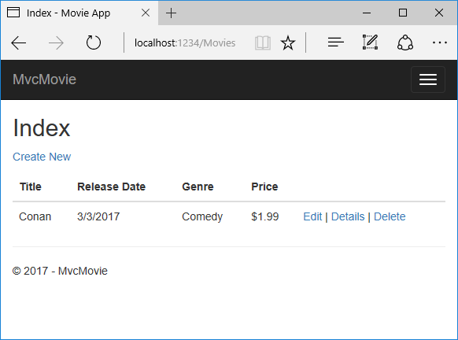

Adding a model to an ASP.NET Core MVC app
By Rick Anderson and Tom Dykstra
In this section, you'll add some classes for managing movies in a database. These classes will be the "Model" part of the MVC app.
You use these classes with Entity Framework Core (EF Core) to work with a database. EF Core is an object-relational mapping (ORM) framework that simplifies the data access code that you have to write. EF Core supports many database engines.
The model classes you'll create are known as POCO classes (from "plain-old CLR objects") because they don't have any dependency on EF Core. They just define the properties of the data that will be stored in the database.
In this tutorial you'll write the model classes first, and EF Core will create the database. An alternate approach not covered here is to generate model classes from an already-existing database. For information about that approach, see ASP.NET Core - Existing Database.
Add a data model class
- Add a class to the Models folder named Movie.cs.
- Add the following code to the Models/Movie.cs file:
using System;
namespace MvcMovie.Models
{
public class Movie
{
public int ID { get; set; }
public string Title { get; set; }
public DateTime ReleaseDate { get; set; }
public string Genre { get; set; }
public decimal Price { get; set; }
}
}
The ID field is required by the database for the primary key.
Build the app to verify you don't have any errors, and you've finally added a Model to your MVC app.
Prepare the project for scaffolding
Add the following highlighted NuGet packages to the MvcMovie.csproj file:
<Project Sdk="Microsoft.NET.Sdk.Web"> <PropertyGroup> <TargetFramework>netcoreapp2.0</TargetFramework> </PropertyGroup> <ItemGroup> <PackageReference Include="Microsoft.AspNetCore.All" Version="2.0.0" /> <PackageReference Include="Microsoft.VisualStudio.Web.CodeGeneration.Design" Version="2.0.0" /> </ItemGroup> <ItemGroup> <DotNetCliToolReference Include="Microsoft.EntityFrameworkCore.Tools.DotNet" Version="2.0.0" /> <DotNetCliToolReference Include="Microsoft.VisualStudio.Web.CodeGeneration.Tools" Version="2.0.0" /> </ItemGroup> </Project>Save the file and select Restore to the Info message "There are unresolved dependencies".
Create a Models/MvcMovieContext.cs file and add the following
MvcMovieContextclass:using Microsoft.EntityFrameworkCore; namespace MvcMovie.Models { public class MvcMovieContext : DbContext { public MvcMovieContext (DbContextOptions<MvcMovieContext> options) : base(options) { } public DbSet<MvcMovie.Models.Movie> Movie { get; set; } } }Open the Startup.cs file and add two usings:
using Microsoft.EntityFrameworkCore; using MvcMovie.Models; namespace MvcMovie { public class Startup {Add the database context to the Startup.cs file:
public void ConfigureServices(IServiceCollection services) { // Add framework services. services.AddMvc(); services.AddDbContext<MvcMovieContext>(options => options.UseSqlite("Data Source=MvcMovie.db")); }This tells Entity Framework which model classes are included in the data model. You're defining one entity set of Movie objects, which will be represented in the database as a Movie table.
Build the project to verify there are no errors.
Scaffold the MovieController
Open a terminal window in the project folder and run the following commands:
dotnet restore
dotnet aspnet-codegenerator controller -name MoviesController -m Movie -dc MvcMovieContext --relativeFolderPath Controllers --useDefaultLayout --referenceScriptLibraries
Note
If you get an error when the scaffolding command runs, see issue 444 in the scaffolding repository for a workaround.
The scaffolding engine creates the following:
- A movies controller (Controllers/MoviesController.cs)
- Razor view files for Create, Delete, Details, Edit and Index pages (Views/Movies/\.cshtml*)
The automatic creation of CRUD (create, read, update, and delete) action methods and views is known as scaffolding. You'll soon have a fully functional web application that lets you manage a movie database.
Perform initial migration
From the command line, run the following .NET Core CLI commands:
dotnet ef migrations add InitialCreate
dotnet ef database update
The dotnet ef migrations add InitialCreate command generates code to create the initial database schema. The schema is based on the model specified in the DbContext (In the Models/MovieContext.cs file). The Initial argument is used to name the migrations. You can use any name, but by convention you choose a name that describes the migration. See Introduction to migrations for more information.
The dotnet ef database update command runs the Up method in the Migrations/<time-stamp>_InitialCreate.cs file, which creates the database.
Test the app
- Run the app and tap the Mvc Movie link.
Tap the Create New link and create a movie.

You may not be able to enter decimal points or commas in the
Pricefield. To support jQuery validation for non-English locales that use a comma (",") for a decimal point, and non US-English date formats, you must take steps to globalize your app. See https://github.com/aspnet/Docs/issues/4076 and Additional resources for more information. For now, just enter whole numbers like 10.
- In some locales you need to specify the date format. See the highlighted code below.
using System;
using System.ComponentModel.DataAnnotations;
namespace MvcMovie.Models
{
public class Movie
{
public int ID { get; set; }
public string Title { get; set; }
[DisplayFormat(DataFormatString = "{0:yyyy-MM-dd}", ApplyFormatInEditMode = true)]
public DateTime ReleaseDate { get; set; }
public string Genre { get; set; }
public decimal Price { get; set; }
}
}
We'll talk about DataAnnotations later in the tutorial.
Tapping Create causes the form to be posted to the server, where the movie information is saved in a database. The app redirects to the /Movies URL, where the newly created movie information is displayed.

Create a couple more movie entries. Try the Edit, Details, and Delete links, which are all functional.
You now have a database and pages to display, edit, update and delete data. In the next tutorial, we'll work with the database.